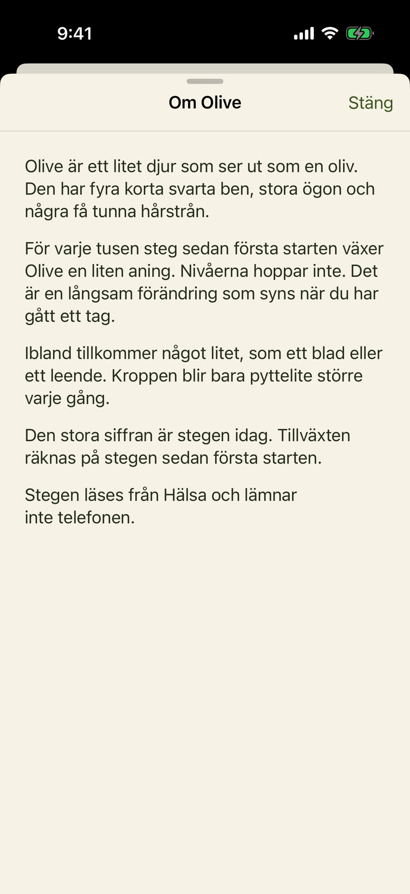

Så funkar det
-
01Gå
Den stora siffran är stegen idag.
-
02Olive växer
För varje tusen steg sedan start blir Olive en liten aning större.
-
03Stannar kvar
Stegen läses från Hälsa och lämnar inte telefonen.
Om Olive
Fyra korta svarta ben, stora ögon och ett blad ibland. Tillväxten är långsam och syns när du har gått ett tag.

Integritet. Stegen läses från Hälsa och lämnar inte telefonen.